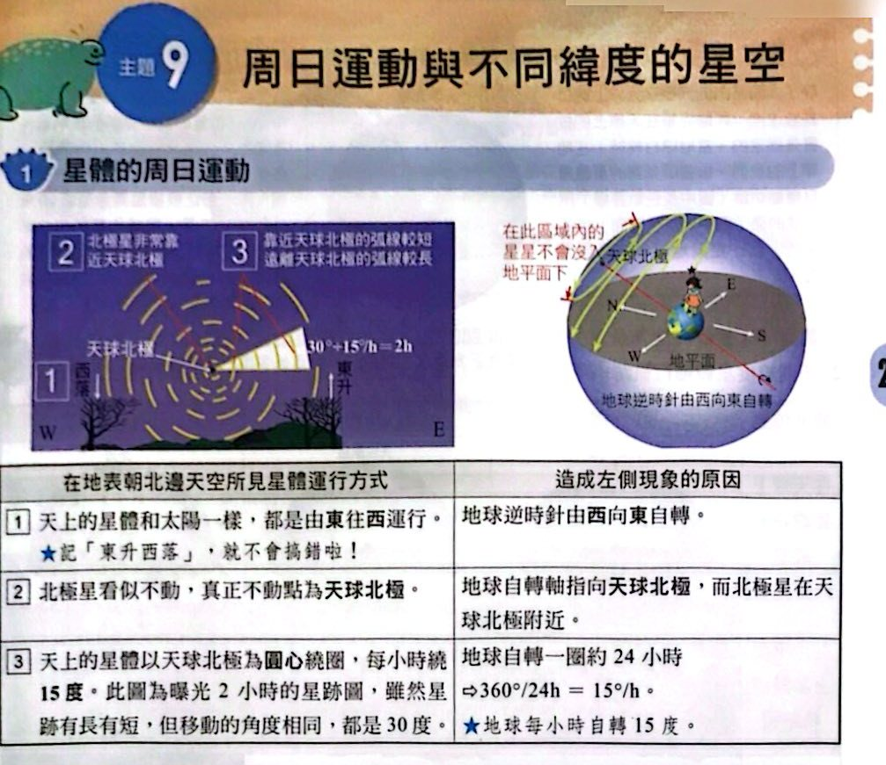
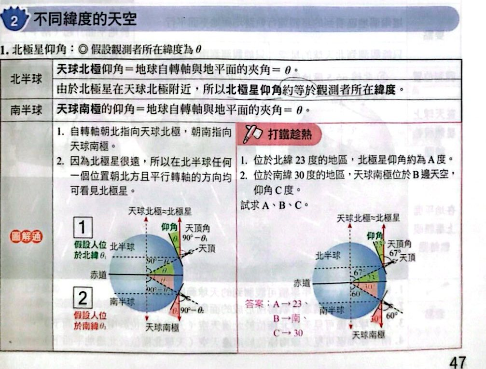
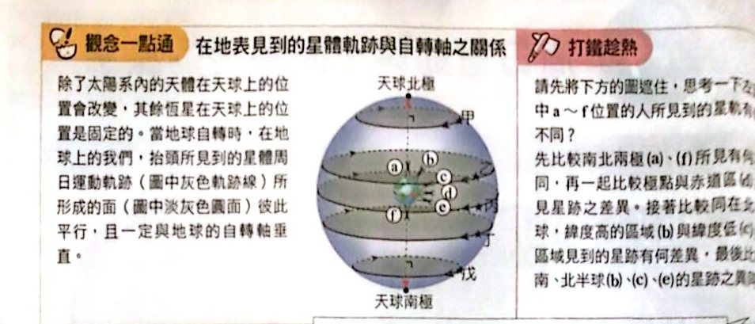
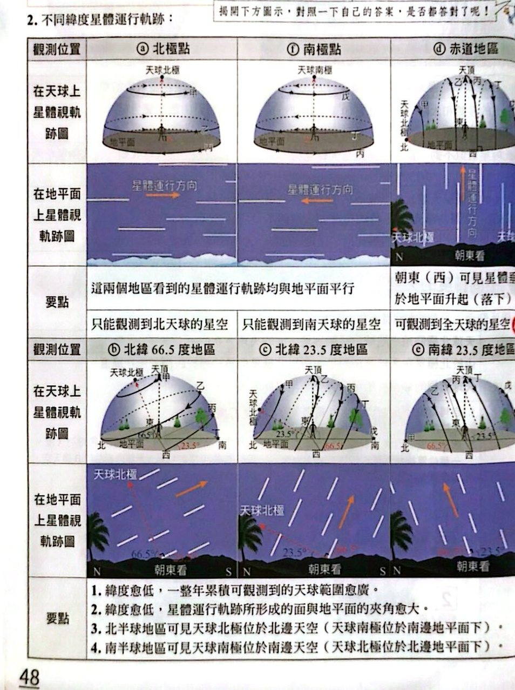
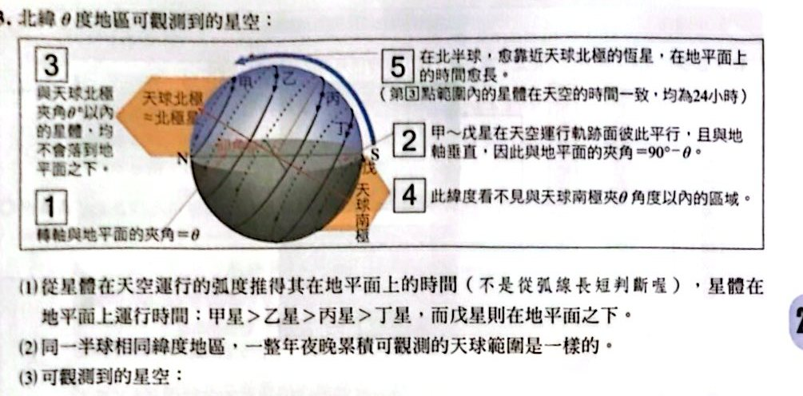
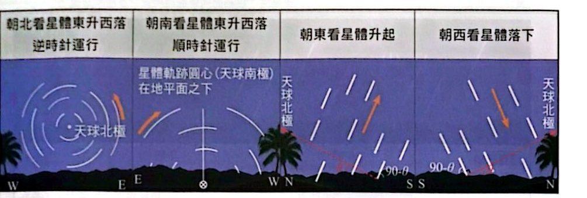
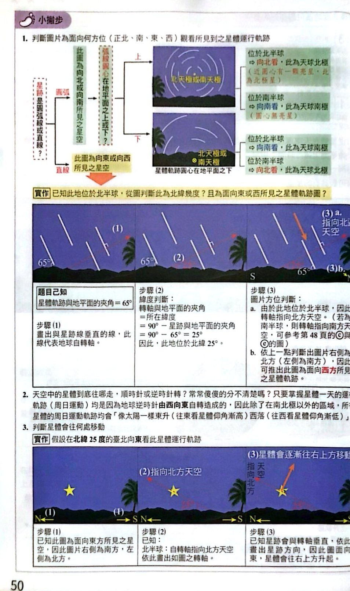

星體的周日運動

星體的周日運動與星跡圖（講義 p.47）
不同緯度的天空

北極星仰角與緯度（講義 p.47）

在地表見到的星體軌跡與自轉軸之關係（講義 p.48）

不同緯度的星體運行軌跡（講義 p.48）

北緯 θ 度地區可觀測到的星空（講義 p.49）

朝北、朝南、朝東、朝西看到的星體運動（講義 p.49）

小撇步：判斷圖片面向哪個方位的星體運行軌跡（講義 p.50）
小試身手
看答案與詳解收起
答(A) 聖彼得堡（60°N）
解這題在考什麼：北極星仰角＝觀測者所在緯度（北半球）。緯度最高者仰角最高：60°N ＞ 40°N ＞ 28°N ＞ 23°N ＞ 1.5°N。
看答案與詳解收起
答(B) 50 度
解這題在考什麼：星跡軌跡與地平面夾角＝90° − 緯度，所以緯度＝90° − 40°＝50°。
看答案與詳解收起
答(C) 朝東，往 b 移動
解這題在考什麼：星跡是直線 ⇒ 向東或向西看；朝東看星體升起（往上），朝西看星體落下（往下）。圖中星跡（在北半球）：自轉軸指向右上方，星體往 b（右上方）移動 ⇒ 是升起 ⇒ 朝東。
看答案與詳解收起
答(D) 南緯 35 度
解這題在考什麼：落日的軌跡與地平面夾角 55° ⇒ 緯度＝90°−55°＝35°。落日是朝西看，太陽往左下落：朝西看時，北半球的天球北極在右側，星體會往右下（朝北）落；現在往左下落，所以在南半球。⇒ 南緯 35 度。
看答案與詳解收起
答(C)；(G)
解這題在考什麼：圖是圓弧星跡，圓心在地平面之上；照片在澳洲（南半球）⇒ 朝南方拍攝，圓心是天球南極（南半球看到天球南極在南邊天空）。
看答案與詳解收起
答(D) D 恆星
解這題在考什麼：星跡的弧度愈大，曝光時間愈長。四條弧中，D 的弧最長（圓心角最大） ⇒ 曝光時間最長。
看答案與詳解收起
答3 小時
解這題在考什麼：星體每小時繞天球極轉 15°。圖中 A 恆星的弧圓心角為 45° ⇒ 45° ÷ 15°/h ＝ 3 小時。
看答案與詳解收起
答下降；南半球的天球南極周圍，星體**順時針**轉
解這題在考什麼：南半球朝南看，星體繞天球南極順時針運行；A 恆星在圓心的右側，順時針運行時會向下移動 ⇒ 仰角逐漸下降。（北半球朝北看則是逆時針。）
看答案與詳解收起
答無法
解這題在考什麼：星跡彼此不平行、呈放射狀，是流星雨的流星軌跡，不是周日運動的星跡，因此無法判斷緯度。（周日運動星跡彼此平行或同心圓。）
看答案與詳解收起
答(E)
解這題在考什麼：極光出現在高緯度地區（近極區）。緯度愈高，星體軌跡面與地平面夾角愈小，軌跡接近水平（圖 E 的軌跡最平）。
看答案與詳解收起
答(D) 檀香山（158°W，21°N）
解這題在考什麼：緯度愈低，累積可觀測的天球範圍愈廣。各地緯度：京都 35°N、曼哈頓 40°N、聖地亞哥 33°S、檀香山 21°N、杜拜 25°N ⇒ 檀香山最低。
看答案與詳解收起
答(B) 12 小時
解這題在考什麼：天球赤道上的星體在任何緯度，在地平面上的運行弧度均為 180° ⇒ 180°÷15°/h＝12 小時。
看答案與詳解收起
答(D)；(F)
解這題在考什麼：北緯 23° 的臺南：
- 與天球北極夾角 ≤ 23° 的星體永不落下；
- 與天球南極夾角 ≤ 23° 的星體永不升起。
四顆恆星與天球北極的夾角：甲 7°、乙 22°、丙 111°、丁 149°。
- 與天球南極的夾角：丙 ＝ 180°−111°＝69°、丁 ＝ 180°−149°＝31°。
- 在地平面上時間最短：丁（接近天球南極，只在地平線上方一小段）⇒ (D)。
- 永遠不落下：與天球北極夾角 ≤ 23° 的，甲（7°）、乙（22°）共 2 顆 ⇒ (F)。
看答案與詳解收起
答(B) 25°
解這題在考什麼：北緯 65° ⇒ 北極星仰角約 65°，頭頂（天頂）仰角 90°，兩者相差 90° − 65°＝25°，所以頭頂的恆星與北極星在天空張開 25°。
看答案與詳解收起
答(D)(E)
解這題在考什麼：大熊座較亮的星與北極星張角約 25～40°，要「永遠無法落到地平面之下」，必須在北半球，且緯度 ≥ 40°（與天球北極夾角 40° 以內的星都不會落下）。
- (A)(B) 南半球看不到北極星，✗。
- (C) 北緯 25°：只有夾角 ≤ 25° 的星永不落下，大熊座一部分會落下，✗。
- (D) ○ 北緯 40°。
- (E) ○ 北緯 50°。
看答案與詳解收起
答(B) 北緯 25 度
解這題在考什麼：圖中軌跡面與地平面的夾角約 65°，所以緯度＝90°−65°＝25°；北半球朝北看可見北極星（天球北極在北邊天空），圖中軌道由南向北（北在右）⇒ 北緯 25 度。
看答案與詳解收起
答(C) 甲丙丁
解這題在考什麼：星空範圍只由緯度決定，與海拔無關。甲（23.5°N）、丙（23.5°N）、丁（23.5°N）緯度相同；乙（24.1°N）略不同。⇒ 甲丙丁。
看答案與詳解收起
答(A) 往右上方移動
解這題在考什麼：朝東看，月亮東升（往上），臺南在北半球，天球北極在北邊（面向東時在左側），星體軌跡垂直於轉軸，會往右上方（偏南）移動。